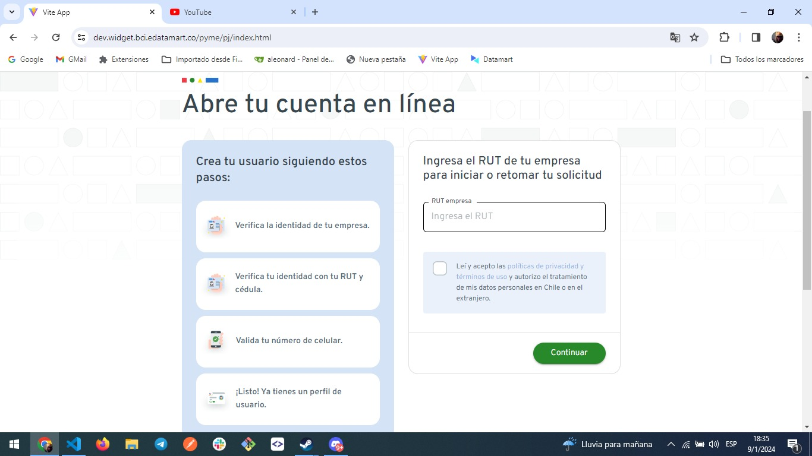

Wiki de Lendbot BCI
Bienvenido a la documentación de Lendbot BCI, aqui se dispone de la doumentación tanto del front como del backend.
Widget
Esta es la herramieta principal de BCI mediante el cual se crean las cuentas del banco, la cual consta de 3 flujos principales, validación, firma y creación de cuenta.
Instalación
Clonar el repositorio bci-pyme-pj-widget.
Guia para los desarrolladores
En la primera pantalla del widget encontramos la funcionalidad Google Recaptcha la cual permite coomporbar si el usuario es un bot o una persona real

Para realizar esta funcionalidad se uso la libreria react-google-recaptcha-v3, la cual para su uso requiere una cuenta de google donde configuramos la que sitio vamos a controlar, la versión de recaptcha que se usará, entre otras configuraciones. La cuenta usada para configurar el recaptcha del widget es:
Cuenta:
user: dm-bci@datamart.co
passw: dmDM<dQhhNXN3hX%
El funcionamiento es sencillo se envuelve toda la aplicacion dentro de un contexto que te brinda la librería
<GoogleReCaptchaProvider
reCaptchaKey={siteKey}
scriptProps={{
async: false,
defer: false,
appendTo: 'head',
nonce: undefined,
}}
container={{
// optional to render inside custom element
element: 'base-component',
parameters: {
badge: 'bottomleft', // optional, default undefined
},
}}
>
<App />
</GoogleReCaptchaProvider>
Luego en el formulario donde quieres validar si el usuario es una persona usas la funcionalidad executeRecaptcha de la siguiente manera:
useEffect(() => {
if (executeRecaptcha)
executeRecaptcha('enquiryFormSubmit').then((gReCaptchaToken) => {
if (matches('enteringRut')) {
send(new VerifyRecaptcha(gReCaptchaToken));
}
});
}, [executeRecaptcha]);
Como trabajar con la maquina de estados
La maquina de estados es una libreria (bci-pyme-pj-state-machine-ui) que nos permite comunicarnos con el backend mediante estados y eventos de la siguiente manera:
Este caso se para enviar eventos a la maquina de estados
const { send } = useCustomMachine(BCIContext);
useEffect(() => {
send(new LoadDocumentsAutomatically());
}, []);
const handleSubmit = (data: IBackgroundInfoViewFormData) => {
send(new SubmitCommand(data.passwordSii.trim(), data.acceptTerms));
navigate('/loading-tax-folder');
};
Este seria el caso para recibir los eventos de la maquina padre en el primer useEffect y de una maquina hija en el 2do ejemplo:
useEffect(() => {
if (state.matches('showOtp')) navigate('/otp-code');
if (state.matches('representative')) navigate('/user');
if (state.matches('enteringRut')) navigate('/company');
if (state.matches('ok')) navigate('/create-account');
if (state.matches('legalbotRevisionManual')) navigate('/manual-revision');
if (state.matches('errorRutInvalido')) setShowError(true);
if (state.matches('showBciEmpresarios')) window.location.href = 'https://www.bci.cl/empresarios';
}, [state]);
useEffect(() => {
service.onTransition((_, event: any) => {
if (event.type === 'done.invoke.sendSubscriptionEventId') setProgress(50);
if (event.type === 'message') setProgress(100);
if (event.type === 'goToErrorSolicitanteNoApoderado') navigate('/rejected-rut-apoderado-final');
switch (event.error) {
case 'RechazadaNoRES':
navigate('/rejected-no-res');
break;
case 'RechazadaFiltroBciEmpresa':
navigate('/rejected-filer-bci');
break;
case 'RechazadaActividadesOGiroNoPermitidos':
navigate('/rejected-turn-not-allowed');
break;
case 'RechazadaNoInicioActividades':
navigate('/rejected-initial-activities');
break;
case 'RechazadaTerminoActividades':
navigate('/rejected-ended-activities');
break;
case 'RechazadaDeterminandoApoderadosSocios':
navigate('/rejected-legal');
break;
case 'RechazadaCantidadSocios':
navigate('/rejected-cantidad-socios');
break;
case 'RechazadaApoderadosSinFacultades':
navigate('/rejected-legal-apderado');
break;
case 'RechazadaTipoSociedad':
navigate('/rejected-tipo-sociedad');
break;
case 'ErrorClaveUnica':
case 'RechazadaVerificacionManualIdentidad':
navigate('/error-clave-unica', { state: { status: event.error } });
break;
case 'RechazadaMaxNumeroIntento':
navigate('/maximos-reintentos-otp');
break;
default:
// Handle other cases or provide a default action
break;
}
});
}, []);
Como trabajar con los eventos de accord
Para esperar los eventos de la firma nos integramos con el lendbot de accord y recibimos una serie de eventos emitidos de front a front de la siguiente manera:
const { status: isSigning } = useListenPostMessage('close_app');
const { status: isAccordReaderError } = useListenPostMessage('accord-reader:error');
// const { status: isSignedDocument } = useListenPostMessage('signed_documents');
const { status: shared } = useListenPostMessage('accord-reader:shared');
const { status: allSigned } = useListenPostMessage('accord-reader:all-signed');
const { status: rejected } = useListenPostMessage('accord-reader:rejected');
const { status: notAllSigned } = useListenPostMessage('accord-reader:not-all-signed');